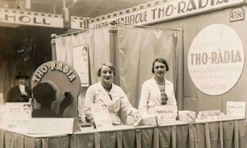

Corporate Information
Welcome to the radiant headquarters of THO RADIA, where beauty transcends time!
üöÄ About THO RADIA
THO RADIA is not merely a beauty brand; it's a celestial revelation in the realm of cosmetics. Conceived from a fervor for pushing boundaries and redefining beauty norms, THO RADIA aspires to empower individuals to embrace their unique radiance.
üåå Our Mission
At THO RADIA, our mission is to craft innovative and celestial beauty products that inspire confidence and self-expression. We believe that beauty knows no bounds and should be as timeless as the stars that grace the night sky.
⚛️ Ethical Cosmic Beauty
We adhere to ethical beauty practices and sustainability, even in a time where communication is carried by the wings of mail carriers. Our products are cruelty-free, and we strive to minimize our impact on the environment, aligning with values that transcend the ages.
üå† Join the Cosmic Community
THO RADIA is not just a brand; it's a cosmic community. Connect with us through written correspondence to share your cosmic transformations, beauty tips, and engage in the ongoing dialogue about the intersection of beauty and the universe.
üåé Correspondence Information
Have cosmic questions or need assistance? Send your inquiries to our cosmic support team via mail. We're here to ensure your cosmic beauty journey with THO RADIA is as smooth as a well-crafted letter.
Thank you for being part of the cosmic revolution. Together, through the timeless medium of mail, we're redefining beauty one radiant correspondence at a time!